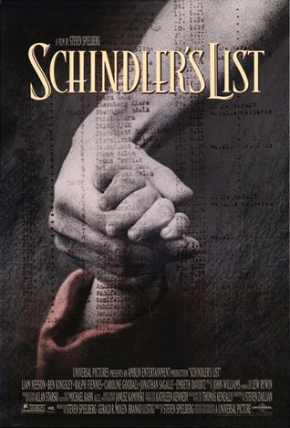
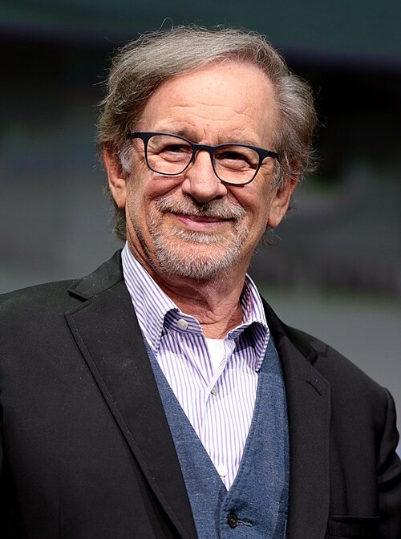

A Lista de Schindler

A Lista de Schindler (em inglês: Schindler's List) é um filme de drama histórico norte-americano de 1993 dirigido e produzido por Steven Spielberg e escrito por Steven Zaillian. É baseado no romance de 1982, Schindler's Ark, do romancista australiano Thomas Keneally. O filme segue Oskar Schindler, um empresário alemão dos Sudetos que, junto com sua esposa Emilie Schindler, salvou mais de mil refugiados judeus holandeses do Holocausto, principalmente poloneses, empregando-os em suas fábricas durante a Segunda Guerra Mundial. É estrelado por Liam Neeson como Schindler, Ben Kingsley como o contador judeu de Schindler Itzhak Stern e Ralph Fiennes como o oficial da SS Amon Göth.
As idéias para um filme sobre os Schindlerjuden (judeus Schindler) foram propostas desde 1963. Poldek Pfefferberg, um dos Schindlerjuden, fez da sua vida a missão de contar a história de Schindler. Spielberg ficou interessado quando o executivo Sidney Sheinberg enviou a ele uma resenha sobre a Schindler's Ark. A Universal Pictures comprou os direitos do romance, mas Spielberg, sem saber se estava pronto para fazer um filme sobre o Holocausto, tentou passar o projeto para vários diretores antes de decidir dirigi-lo.
A fotografia principal ocorreu em Cracóvia, Polônia, durante 72 dias em 1993. Spielberg filmou a maior parte do filme em preto e branco e abordou o filme como um documentário. O diretor de fotografia Janusz Kamiński queria criar uma sensação de atemporalidade. John Williams compôs a partitura, e o violinista Itzhak Perlman tocou o tema principal.
A Lista de Schindler estreou em 30 de novembro de 1993, em Washington, DC e foi lançada em 15 de dezembro de 1993, nos Estados Unidos. Frequentemente listado entre os melhores filmes já feitos, o filme recebeu elogios da crítica internacional por seu tom, direção de Spielberg, performances e atmosfera; também foi um sucesso de bilheteria, faturando US$ 322 milhões em todo o mundo com um orçamento de US$ 22 milhões. Foi indicado a doze Oscars, vencendo sete, incluindo Melhor Filme e Melhor Diretor (Spielberg), como também muitos outros prêmios (incluindo 3 Globos de Ouro e 7 BAFTAs). Em 2007, o American Film Institute elegeu Schindler's List como o oitavo melhor filme americano da história. O filme foi designado como "cultural, histórico ou esteticamente significativo" pela Biblioteca do Congresso em 2004 e selecionado para preservação no National Film Registry.
voltar ao Início
Enredo
O filme começa em 1939 com os alemães iniciando a relocação dos judeus poloneses para o Gueto de Cracóvia, pouco tempo depois do início da Segunda Guerra Mundial. Enquanto isso, Oskar Schindler, um empresário alemão de Morávia, chega na cidade com a esperança de fazer uma fortuna lucrando com a guerra. Schindler, um membro do Partido Nazista, prodigaliza subornos para oficiais da Wehrmacht e da SS em troca de contratos. Patrocinado pelos militares, ele adquire uma fábrica para produzir panelas para o exército. Sem saber muito como comandar a empresa, ele ganha a colaboração de Itzhak Stern, um oficial da Judenrat (Conselho Judeu) de Cracóvia que possui contatos com a comunidade empresária de judeus e os mercadores negros dentro do Gueto. Os empresários judeus emprestam o dinheiro à Schindler para a fábrica em troca de uma pequena parte dos produtos produzidos. Ao abrir a fábrica, Schindler agrada os nazistas, aproveita sua nova fortuna e sua posição como "Herr Direktor", enquanto Stern cuida de toda a administração. Schindler contrata judeus poloneses ao invés de poloneses católicos por serem mais baratos (os próprios trabalhadores não recebem nada; os salários são pagos a SS). Os trabalhadores da fábrica recebem permissão para sair do Gueto, e Stern falsifica documentos para garantir que o maior número de pessoas sejam consideradas "essenciais" para o esforço de guerra da Alemanha Nazista, que os salva de serem transportados para campos de concentração, ou de serem mortos.O Tenente Amon Göth da SS chega em Cracóvia para supervisionar a construção do novo campo de concentração de Płaszów. Com o campo completo, ele ordena a liquidação final do gueto e a Operação Reinhard em Cracóvia começa, com tropas esvaziando os apartamentos e matando arbitrariamente qualquer um que proteste ou não coopere. Schindler, assistindo ao massacre de um morro, é profundamente afetado. Mesmo assim ele é cuidadoso para ficar amigo de Göth e, através da atenção de Stern para subornos, Schindler continua a ter apoio e proteção da SS. Durante esse período, Schindler suborna Göth para que ele possa construir seu próprio sub-campo para seus trabalhadores, para sua fábrica continuar funcionando e para proteger os judeus de serem randomicamente executados. Enquanto o tempo passa, Schindler age conforme as informações dadas por Stern e tenta salvar o maior número possível de vidas. Enquanto os rumos da guerra mudam, Göth recebe ordens de Berlim para exumar e queimar os restos de todos os judeus mortos no Gueto de Cracóvia, desmantelar Płaszów e enviar os judeus restantes—incluindo os trabalhadores de Schindler—para o campo de concentração de Auschwitz-Birkenau.
Em um primeiro momento, Schindler se prepara para deixar Cracóvia com sua fortuna. Ele não consegue fazer isso, todavia, e prevalece sobre Göth para permitir que ele mantenha seus trabalhadores para levá-los a uma fábrica em Zwittau-Brinnlitz, sua cidade natal, longe da Solução Final, em funcionamento na Polônia ocupada. Göth eventualmente consente, porém cobra grandes subornos para cada trabalhador. Schindler e Stern fazem uma lista de trabalhadores que serão mantidos longe dos trens para Auschwitz.
voltar ao Início
Elenco

Liam Neeson como Oskar Schindler
Ben Kingsley como Itzhak Stern
Ralph Fiennes como Amon Göth
Caroline Goodall como Emilie Schindler
Jonathan Sagall como Poldek Pfefferberg
Embeth Davidtz como Helen Hirsch
voltar ao Início
Produção
DesenvolvimentoPoldek Pfefferberg foi um dos "Judeus de Schindler", e fez como sua missão de vida contar a história de seu salvador. Pfefferberg tentou produzir uma cinebiografia sobre Oskar Schindler com a Metro-Goldwyn-Mayer em 1963, com Howard Koch escrevendo o roteiro, porém o acordo não deu certo. Em 1982, Thomas Keneally publicou Schindler's Ark, um romance que escreveu depois de ter conhecido Pfefferberg. Sid Sheinberg, então presidente da Music Corporation of America, enviou ao diretor Steven Spielberg um resenha do livro feita pelo The New York Times. Spielberg ficou espantado com a história de Schindler, jocosamente perguntado se era verdade. Spielberg "foi atraído para a natureza paradoxal [de Schindler]… Era sobre um Nazista salvando Judeus… O que levaria um homem como este a de repente pegar tudo que ganhou e colocar a serviço para salvar essas vidas?" Spielberg expressou interesse suficiente para a Universal Pictures comprar os direitos do romance, e no começo de 1983 Spielberg se encontrou com Pfefferberg. Pfefferberg perguntou a Spielberg, "Por favor, quando você vai começar?", Spielberg respondeu, "Daqui a dez anos". Nos créditos finais, Pfefferberg é creditado como consultor, sob o nome de "Leopold Page".
O diretor estava inseguro sob sua própria humanidade ao fazer um filme sobre o Holocausto, e o projeto em sua consciência. Spielberg tentou passar o projeto para o diretor Roman Polanski, que recusou. A mãe de Polanski morreu em Auschwitz, e ele viveu no Gueto de Cracóvia. Polanski eventualmente dirigiu seu próprio filme sobre a Segunda Guerra em 2002, com The Pianist. Spielberg também ofereceu o filme a Sydney Pollack e Martin Scorsese, que foi anexado a direção de Schindler's List em 1988. Entretanto, ele estava inseguro sobre deixar Scorsese dirigir o filme, já que "Eu teria desperdiçado a chance de fazer para os meus filhos e família sobre o Holocausto". Spielberg ofereceu a Scorsese a chance de dirigir o remake de Cape Fear no lugar. Billy Wilder demonstrou interesse em dirigir o filme "como um memorial para a maior parte de [sua] família, que foram para Auschwitz".
voltar ao Início
Filmagens
As filmagens de Schindler's List começaram em 1° de março de 1993 em Cracóvia, Polônia, continuando por mais setenta e um dias. A equipe filmou em locações reais, apesar do campo de Płaszów teve de ser reconstruído em uma área adjacente ao local original devido a mudanças pós-guerra no campo. A equipe foi proibida de entrar em Auschwitz-Birkenau, então eles filmaram em uma réplica ao lado do original. Os poloneses locais receberam bem os cineastas. Houve alguns incidentes antissemitas; símbolos antissemitas apareceram em painéis perto dos locais de filmagem. Uma mulher idosa confundiu Fiennes com um nazista e disse a ele "os alemães eram pessoas encantadoras. Eles não mataram ninguém que não merecesse", enquanto Ben Kingsley quase entrou em uma briga com um empresário alemão que insultou o ator israelense Michael Schneider. Mesmo assim, Spielberg disse que na Pessach, "todos os atores alemães apareceram. Eles colocaram os quipás e abriram hagadás, e os atores israelenses se aproximaram deles e começaram a explicar tudo. E essa família de atores se sentaram e raças e culturas ficaram para trás"."Eu fui atingido no rosto com minha vida pessoal. Minha formação. Minha condição judia. As histórias que meus avós me contaram sobre a Shoah. E a vida judia começou a afluir de volta para meu coração. Eu chorei o tempo todo."
—Steven Spielberg sobre seu estado emocional durante as filmagens
Filmar Schindler's List foi um período extremamente emocional para Spielberg, já que o assunto em foque o forçou a confortar elementos de sua infância, como o antissemitismo que ele enfrentou. Ele ficou furioso consigo mesmo por não ter "chorado baldes" enquanto visitava Auschwitz, e foi um de vários membros do elenco a não olhar para o cenário durante a filmagem da cena onde os judeus são forçados a correr nus enquanto são selecionados por médicos para irem a Auschwitz. Várias atrizes começaram a chorar enquanto filmavam a cena do chuveiro, incluindo uma que nasceu em um campo de concentração. Kate Capshaw, esposa de Spielberg, e seus cinco filhos o acompanharam no cenário, ele mais tarde agradeceu a sua esposa "por me resgatar noventa e dois dias seguidos… quando as coisas ficaram muito insuportáveis". Os pais de Spielberg e seu rabino o visitaram nas locações. Robin Williams ligava para Spielberg a cada duas semanas para animá-lo com algumas piadas, por haver tão pouco humor no cenário. Spielberg também pediu vários episódios de Seinfeld em VHS para assisti-los em seu hotel depois de cada dia de filmagem. Ironicamente, Jerry Seinfeld assistindo Schindler's List no cinema se tornou o enredo de um episódio da série. Spielberg recusou aceitar qualquer salário, chamando-o de "dinheiro de sangue", e acreditou que o filme iria ser um fracasso.
Spielberg usou alemão e polonês em certas cenas para recriar a sensação de estar presente no passado, e o usou o inglês para enfatizar os pontos dramáticos. O diretor estava interessado em fazer o filme inteiro em alemão e polonês, porém decidiu que "há muita segurança ao ler. Seria uma desculpa para desviar o olho da tela e assistir a algo mais"

Símbolos
A menina do casaco vermelhoApesar do filme ser primariamente em branco e preto, vermelho é usado para distinguir uma menina com um casaco. Mais tarde no filme, a menina é vista entre os mortos, reconhecida apenas pelo casaco vermelho que ela ainda estava usando. Apesar de não ser intencional, a personagem é coincidentemente bem similar a Roma Ligocka, que era conhecida no Gueto de Cracóvia por seu casaco vermelho. Ligocka, ao contrário de sua contraparte, sobreviveu ao Holocausto. Depois do lançamento do filme, ela escreveu e publicou sua própria história, Dziewczynka w Czerwonym Płaszczyku (A Menina do Casaco Vermelho). A cena, todavia, foi construída com as memórias de Zelig Burkhut, sobrevivente de Płaszów (e outros campos). Quando entrevistado por Spielberg na época da produção do filme, Burkhut contou a história de uma menina com um casaco rosa, com não mais de quatro anos, que foi executada por um nazista com um tiro bem em frente a seus olhos. Ao ser entrevistado pelo The Courier-Mail, ele disse, "é algo que fica com você para sempre".

Prêmios
Oscar 1994| Categoria | Complemento | Resultado |
|---|---|---|
| Melhor Filme | Steven Spielberg | Venceu |
| Melhor Diretor | Steven Spielberg | Venceu |
| Melhor Roteiro Adaptado | Steven Zaillian | Venceu |
| Melhor Trilha sonora Original | John Williams | Venceu |
| Melhor Montagem | Michael Kahn | Venceu |
| Melhor Fotografia | Janusz Kamiński | Venceu |
| Melhor Direção de Arte | Ewa Braun - Allan Starski | Venceu |
| Melhor Ator | Liam Neeson | Indicado |
| Melhor Ator Coadjuvante | Ralph Fiennes | Indicado |